Laporan Praktikum Aplikasi Mobile: State Management pada Aplikasi ResepKu Menggunakan setState() dan Provider
1. Pendahuluan
Praktikum keenam Aplikasi Mobile ini membahas state management pada Flutter dengan membuat aplikasi ResepKu, yaitu aplikasi sederhana yang menampilkan daftar resep masakan beserta detailnya. State merupakan data yang dapat berubah selama aplikasi berjalan dan memengaruhi tampilan, sehingga pemilihan tempat penyimpanan state menjadi hal yang penting dalam merancang aplikasi. Pada praktikum ini digunakan dua pendekatan, yaitu state lokal menggunakan StatefulWidget dan setState() yang cocok untuk data yang hanya dibutuhkan oleh satu widget, serta state global menggunakan package provider yang cocok untuk data yang dibutuhkan oleh banyak widget dan halaman sekaligus.
Kedua pendekatan tersebut diterapkan pada dua fitur yang berbeda. Fitur jumlah porsi pada halaman detail menggunakan setState() karena nilainya hanya dibutuhkan oleh halaman tersebut, sedangkan fitur favorit menggunakan Provider karena daftar favorit dibutuhkan oleh daftar resep, badge di AppBar, halaman detail, dan halaman Favorit. Sebelum menggunakan Provider, status favorit terlebih dahulu dicoba disimpan sebagai state lokal untuk melihat keterbatasan pendekatan tersebut ketika satu data dibutuhkan di banyak tempat.
Tujuan Praktikum:
- Mahasiswa mampu membuat state lokal dengan StatefulWidget dan setState() pada fitur jumlah porsi di halaman detail.
- Mahasiswa mampu menjelaskan keterbatasan state lokal ketika satu data dibutuhkan oleh banyak widget dan halaman.
- Mahasiswa mampu membuat state global dengan package provider (ChangeNotifier dan MultiProvider) pada fitur favorit.
- Mahasiswa mampu membaca state dengan context.watch, context.read, dan Consumer di beberapa halaman.
2. Langkah Kerja
Bagian A: Menyiapkan ResepKu dan State Lokal
A.1 Membuat Project dan Struktur Folder
flutter create resepku
cd resepkuProject baru bernama resepku dibuat menggunakan perintah flutter create, kemudian terminal diarahkan ke folder project tersebut. File test/widget_test.dart bawaan template dihapus karena merujuk ke class MyApp yang tidak digunakan lagi, sehingga tidak menimbulkan error pada editor.
lib/
├── main.dart
├── models/
│ └── recipe.dart
├── data/
│ └── dummy_recipes.dart
├── providers/
│ └── favorite_provider.dart
├── pages/
│ ├── home_page.dart
│ ├── detail_page.dart
│ └── favorite_page.dart
└── widgets/
├── identity_footer.dart
├── recipe_tile.dart
└── favorite_badge_button.dartFolder lib dibagi menjadi lima folder sesuai perannya, yaitu models untuk class data, data untuk data dummy, providers untuk state global, pages untuk halaman, dan widgets untuk komponen yang dapat digunakan ulang. Pemisahan ini membuat setiap file memiliki tanggung jawab yang jelas sehingga kode lebih mudah dibaca dan dikembangkan.
A.2 Membuat Model Recipe
class Recipe {
final int id;
final String name;
final String cuisine;
final String difficulty;
final int prepTimeMinutes;
final int cookTimeMinutes;
final int servings;
final int caloriesPerServing;
final double rating;
final String image; // dipakai mulai Modul 7
final List<String> ingredients;
const Recipe({
required this.id,
required this.name,
required this.cuisine,
required this.difficulty,
required this.prepTimeMinutes,
required this.cookTimeMinutes,
required this.servings,
required this.caloriesPerServing,
required this.rating,
required this.image,
required this.ingredients,
});
int get totalTimeMinutes => prepTimeMinutes + cookTimeMinutes;
}Class Recipe merepresentasikan satu resep dengan field seperti nama, jenis masakan, tingkat kesulitan, waktu persiapan, waktu memasak, jumlah porsi, kalori per porsi, rating, gambar, dan daftar bahan. Seluruh field bersifat final dan constructor-nya bertanda const sehingga objek resep tidak dapat diubah setelah dibuat. Getter totalTimeMinutes menjumlahkan waktu persiapan dan waktu memasak, lalu dipanggil seperti field biasa tanpa tanda kurung.
A.3 Menambahkan Data Dummy
import 'package:resepku/models/recipe.dart';
// Data sementara. Isinya sama dengan https://dummyjson.com/recipes (id 1-6),
// sehingga di Modul 8 cukup sumber datanya yang diganti ke API.
const List<Recipe> dummyRecipes = [
Recipe(
id: 1, name: 'Classic Margherita Pizza', cuisine: 'Italian', difficulty: 'Easy',
prepTimeMinutes: 20, cookTimeMinutes: 15, servings: 4, caloriesPerServing: 300,
rating: 4.6, image: 'https://cdn.dummyjson.com/recipe-images/1.webp',
ingredients: ['Pizza dough', 'Tomato sauce', 'Fresh mozzarella cheese',
'Fresh basil leaves', 'Olive oil', 'Salt and pepper to taste'],
),
Recipe(
id: 2, name: 'Vegetarian Stir-Fry', cuisine: 'Asian', difficulty: 'Medium',
prepTimeMinutes: 15, cookTimeMinutes: 20, servings: 3, caloriesPerServing: 250,
rating: 4.7, image: 'https://cdn.dummyjson.com/recipe-images/2.webp',
ingredients: ['Tofu, cubed', 'Broccoli florets', 'Carrots, sliced',
'Bell peppers, sliced', 'Soy sauce', 'Ginger, minced', 'Garlic, minced',
'Sesame oil', 'Cooked rice for serving'],
),
Recipe(
id: 3, name: 'Chocolate Chip Cookies', cuisine: 'American', difficulty: 'Easy',
prepTimeMinutes: 15, cookTimeMinutes: 10, servings: 24, caloriesPerServing: 150,
rating: 4.9, image: 'https://cdn.dummyjson.com/recipe-images/3.webp',
ingredients: ['All-purpose flour', 'Butter, softened', 'Brown sugar',
'White sugar', 'Eggs', 'Vanilla extract', 'Baking soda', 'Salt',
'Chocolate chips'],
),
Recipe(
id: 4, name: 'Chicken Alfredo Pasta', cuisine: 'Italian', difficulty: 'Medium',
prepTimeMinutes: 15, cookTimeMinutes: 20, servings: 4, caloriesPerServing: 500,
rating: 4.9, image: 'https://cdn.dummyjson.com/recipe-images/4.webp',
ingredients: ['Fettuccine pasta', 'Chicken breast, sliced', 'Heavy cream',
'Parmesan cheese, grated', 'Garlic, minced', 'Butter',
'Salt and pepper to taste', 'Fresh parsley for garnish'],
),
Recipe(
id: 5, name: 'Mango Salsa Chicken', cuisine: 'Mexican', difficulty: 'Easy',
prepTimeMinutes: 15, cookTimeMinutes: 25, servings: 3, caloriesPerServing: 380,
rating: 4.9, image: 'https://cdn.dummyjson.com/recipe-images/5.webp',
ingredients: ['Chicken thighs', 'Mango, diced', 'Red onion, finely chopped',
'Cilantro, chopped', 'Lime juice', 'Jalapeño, minced',
'Salt and pepper to taste', 'Cooked rice for serving'],
),
Recipe(
id: 6, name: 'Quinoa Salad with Avocado', cuisine: 'Mediterranean',
difficulty: 'Easy', prepTimeMinutes: 20, cookTimeMinutes: 15, servings: 4,
caloriesPerServing: 280, rating: 4.4,
image: 'https://cdn.dummyjson.com/recipe-images/6.webp',
ingredients: ['Quinoa, cooked', 'Avocado, diced', 'Cherry tomatoes, halved',
'Cucumber, diced', 'Red bell pepper, diced', 'Feta cheese, crumbled',
'Lemon vinaigrette dressing', 'Salt and pepper to taste'],
),
];File dummy_recipes.dart berisi konstanta dummyRecipes, yaitu list berisi enam objek Recipe yang digunakan sebagai data sementara untuk ditampilkan pada aplikasi. Data tersebut diambil dari enam resep pertama pada dummyjson.com/recipes, sehingga setiap resep sudah memiliki nama, jenis masakan, waktu memasak, jumlah porsi, kalori, rating, dan daftar bahan yang lengkap. Karena bertanda const, seluruh data dibuat sekali saat kompilasi dan tidak berubah selama aplikasi berjalan.
A.4 Membuat Footer Identitas
import 'package:flutter/material.dart';
const String kNim = '2411531010';
const String kNama = 'Rizan Oesvan Idrati';
/// Menampilkan NIM dan nama di bawah setiap halaman.
/// Dipasang sekali di MaterialApp.builder, jadi berlaku untuk semua route.
class IdentityFooter extends StatelessWidget {
const IdentityFooter({super.key, required this.child});
final Widget child;
@override
Widget build(BuildContext context) {
return Column(
children: [
Expanded(
// ruang aman bawah sudah diurus footer, jadi tidak dihitung dua kali
child: MediaQuery.removePadding(
context: context,
removeBottom: true,
child: child,
),
),
Material(
color: Colors.black87,
child: SafeArea(
top: false,
child: SizedBox(
width: double.infinity,
child: Padding(
padding: const EdgeInsets.symmetric(vertical: 6),
child: Text(
'$kNim • $kNama',
textAlign: TextAlign.center,
style: const TextStyle(color: Colors.white, fontSize: 12),
),
),
),
),
),
],
);
}
}IdentityFooter menerima parameter child berupa halaman yang sedang tampil, lalu menyusunnya dalam Column bersama sebuah bar hitam berisi NIM dan nama. Halaman ditempatkan di dalam Expanded agar mengisi sisa ruang layar, sedangkan MediaQuery.removePadding menghapus padding bawah halaman karena ruang aman bagian bawah layar sudah ditangani oleh SafeArea pada footer. Widget ini dipasang sekali melalui parameter builder pada MaterialApp, sehingga footer otomatis tampil di seluruh halaman tanpa perlu ditambahkan ke setiap Scaffold.
A.5 Halaman Home dan RecipeTile
import 'package:flutter/material.dart';
import 'package:resepku/pages/home_page.dart';
import 'package:resepku/widgets/identity_footer.dart';
void main() {
runApp(const ResepKuApp());
}
class ResepKuApp extends StatelessWidget {
const ResepKuApp({super.key});
@override
Widget build(BuildContext context) {
return MaterialApp(
title: 'ResepKu',
debugShowCheckedModeBanner: false,
theme: ThemeData(colorSchemeSeed: Colors.deepOrange),
builder: (context, child) => IdentityFooter(child: child!), // footer NIM & nama
home: const HomePage(),
);
}
}File main.dart menjalankan ResepKuApp yang mengembalikan MaterialApp dengan tema berbasis warna deepOrange melalui colorSchemeSeed. Parameter builder membungkus Navigator dengan IdentityFooter, sedangkan parameter home menetapkan HomePage sebagai halaman pertama.
import 'package:flutter/material.dart';
import 'package:resepku/data/dummy_recipes.dart';
import 'package:resepku/widgets/recipe_tile.dart';
class HomePage extends StatelessWidget {
const HomePage({super.key});
@override
Widget build(BuildContext context) {
return Scaffold(
appBar: AppBar(
title: const Text('ResepKu'),
),
body: ListView(
children: [
for (final recipe in dummyRecipes) RecipeTile(recipe: recipe),
],
),
);
}
}HomePage berupa StatelessWidget yang menampilkan AppBar berjudul ResepKu dan sebuah ListView. Isi ListView dibangun menggunakan collection for, sehingga setiap resep pada dummyRecipes ditampilkan sebagai satu RecipeTile.
import 'package:flutter/material.dart';
import 'package:resepku/models/recipe.dart';
import 'package:resepku/pages/detail_page.dart';
class RecipeTile extends StatelessWidget {
const RecipeTile({super.key, required this.recipe});
final Recipe recipe;
@override
Widget build(BuildContext context) {
return ListTile(
leading: CircleAvatar(child: Text(recipe.name[0])),
title: Text(recipe.name),
subtitle: Text(
'${recipe.cuisine} • ${recipe.totalTimeMinutes} menit • ★ ${recipe.rating}',
),
onTap: () => Navigator.push(
context,
MaterialPageRoute(builder: (context) => DetailPage(recipe: recipe)),
),
);
}
}RecipeTile menerima satu objek Recipe melalui constructor dan menampilkannya dalam ListTile. Bagian leading berisi CircleAvatar dengan huruf pertama nama resep, title berisi nama resep, dan subtitle berisi jenis masakan, total waktu memasak, serta rating. Ketika diketuk, tile membuka DetailPage dengan mengirimkan objek resep yang sama melalui Navigator.push.
A.6 Halaman Detail dengan setState()
import 'package:flutter/material.dart';
import 'package:resepku/models/recipe.dart';
class DetailPage extends StatefulWidget {
const DetailPage({super.key, required this.recipe});
final Recipe recipe;
@override
State<DetailPage> createState() => _DetailPageState();
}
class _DetailPageState extends State<DetailPage> {
late int _servings; // state lokal: hanya halaman ini yang butuh
@override
void initState() {
super.initState();
_servings = widget.recipe.servings; // nilai awal dari data resep
}
void _addServing() {
setState(() => _servings++);
}
void _removeServing() {
if (_servings > 1) {
setState(() => _servings--);
}
}DetailPage dibuat sebagai StatefulWidget karena jumlah porsi berubah setiap kali tombol tambah atau kurang ditekan. Variabel _servings dideklarasikan dengan kata kunci late karena nilainya baru diisi di dalam initState(), yaitu dari widget.recipe.servings. Penulisan widget.recipe diperlukan karena data resep dimiliki oleh class DetailPage, bukan oleh class State-nya. Method _addServing dan _removeServing membungkus perubahan nilai di dalam setState() agar Flutter menjalankan build() kembali, dengan _removeServing hanya mengurangi nilai apabila porsi masih lebih dari satu.
@override
Widget build(BuildContext context) {
final recipe = widget.recipe;
final totalCalories = recipe.caloriesPerServing * _servings;
final textTheme = Theme.of(context).textTheme;
return Scaffold(
appBar: AppBar(
title: Text(recipe.name),
),
body: ListView(
padding: const EdgeInsets.all(16),
children: [
Text(
'${recipe.cuisine} • ${recipe.difficulty} • ${recipe.totalTimeMinutes} menit',
style: textTheme.bodyLarge,
),
const SizedBox(height: 16),
Card(
child: Padding(
padding: const EdgeInsets.all(12),
child: Row(
children: [
Text('Porsi', style: textTheme.titleMedium),
const Spacer(),
IconButton.filledTonal(
onPressed: _servings > 1 ? _removeServing : null,
icon: const Icon(Icons.remove),
),
Padding(
padding: const EdgeInsets.symmetric(horizontal: 16),
child: Text('$_servings', style: textTheme.titleLarge),
),
IconButton.filledTonal(
onPressed: _addServing,
icon: const Icon(Icons.add),
),
],
),
),
),
const SizedBox(height: 8),
Text('Total kalori: $totalCalories kkal', style: textTheme.titleMedium),
const SizedBox(height: 24),
Text('Bahan', style: textTheme.titleLarge),
for (final item in recipe.ingredients)
ListTile(
dense: true,
leading: const Icon(Icons.check_circle_outline),
title: Text(item),
),
],
),
);
}
}Di dalam build(), total kalori dihitung dari caloriesPerServing dikalikan
_servings, sehingga nilainya ikut berubah setiap kali porsi diubah. Halaman menampilkan informasi resep,
Card berisi pengatur porsi, total kalori, dan daftar bahan yang dibangun dengan collection for. Tombol
kurang menjadi tidak aktif ketika porsi bernilai 1 karena baris
onPressed: _servings > 1 ? _removeServing : null. Ketika porsi tidak lebih dari satu,
onPressed bernilai null, dan Flutter secara otomatis menampilkan tombol dalam keadaan nonaktif serta tidak
merespons ketukan.
Checkpoint 1
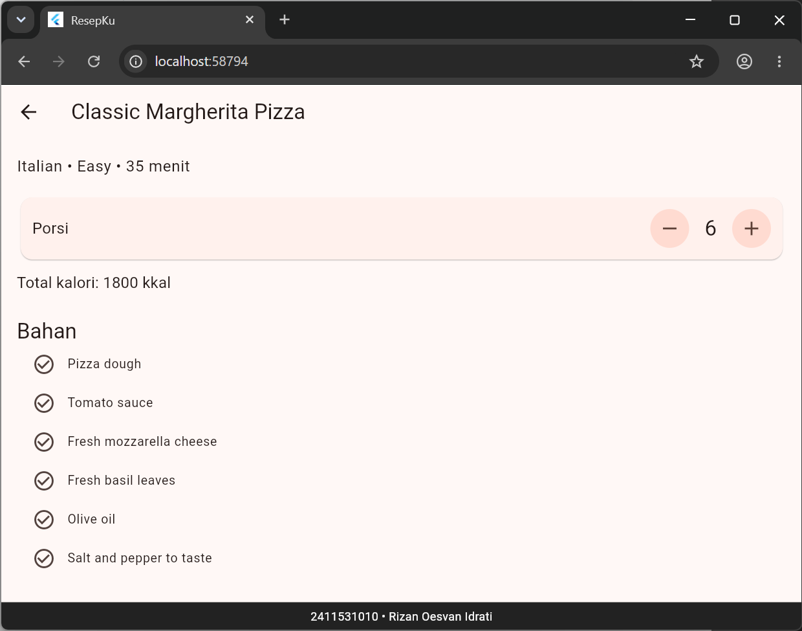
Checkpoint 1: Classic Margherita Pizza dengan Porsi 6Halaman detail Classic Margherita Pizza dengan porsi yang dinaikkan menjadi 6 menampilkan total kalori 1800 kkal, sesuai dengan perhitungan 6 porsi dikalikan 300 kkal per porsi. Hal ini menunjukkan bahwa setState() berhasil memperbarui jumlah porsi sekaligus nilai yang dihitung darinya.
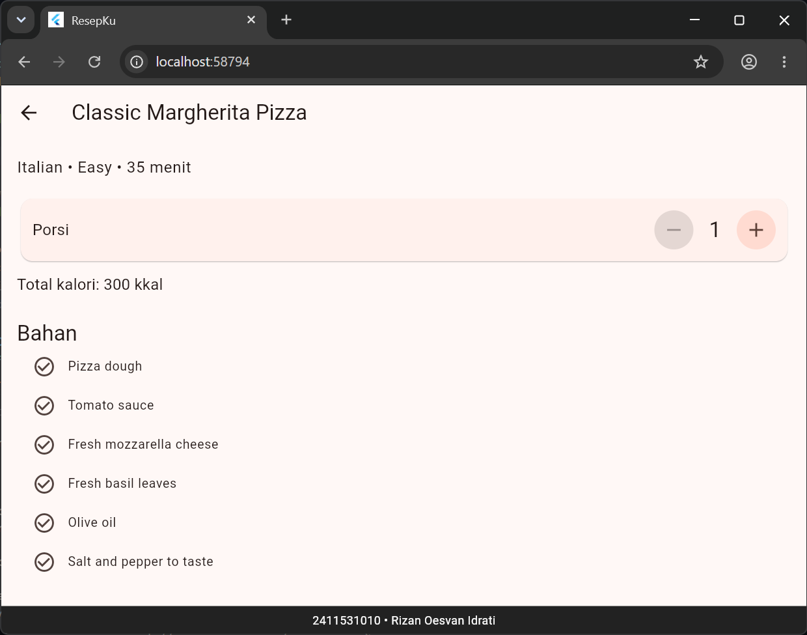
Checkpoint 1: Tombol Kurang Nonaktif pada Porsi 1Ketika porsi diturunkan hingga bernilai 1, tombol kurang tampil dalam keadaan nonaktif dan tidak dapat ditekan, sesuai dengan kondisi pada properti onPressed yang bernilai null ketika _servings tidak lebih dari satu.
Bagian B: Eksperimen Favorit dengan State Lokal
B.1 Mengganti RecipeTile
import 'package:flutter/material.dart';
import 'package:resepku/models/recipe.dart';
import 'package:resepku/pages/detail_page.dart';
// VERSI EKSPERIMEN: favorit disimpan sebagai state lokal di setiap tile
class RecipeTile extends StatefulWidget {
const RecipeTile({super.key, required this.recipe});
final Recipe recipe;
@override
State<RecipeTile> createState() => _RecipeTileState();
}
class _RecipeTileState extends State<RecipeTile> {
bool _isFavorite = false;
@override
Widget build(BuildContext context) {
final recipe = widget.recipe;
return ListTile(
leading: CircleAvatar(child: Text(recipe.name[0])),
title: Text(recipe.name),
subtitle: Text(
'${recipe.cuisine} • ${recipe.totalTimeMinutes} menit • ★ ${recipe.rating}',
),
trailing: IconButton(
icon: Icon(
_isFavorite ? Icons.favorite : Icons.favorite_border,
color: _isFavorite ? Colors.red : null,
),
onPressed: () => setState(() => _isFavorite = !_isFavorite),
),
onTap: () => Navigator.push(
context,
MaterialPageRoute(builder: (context) => DetailPage(recipe: recipe)),
),
);
}
}Pada versi eksperimen, RecipeTile diubah menjadi StatefulWidget dan setiap tile menyimpan status favoritnya sendiri dalam variabel _isFavorite dengan nilai awal false. Properti trailing berisi IconButton yang menampilkan ikon hati terisi berwarna merah apabila _isFavorite bernilai true, dan menekan tombol tersebut akan membalik nilainya melalui setState().
B.2 Pengamatan
Apakah ikon hati berubah? Mengapa? Ikon hati berubah menjadi merah pada resep yang ditekan. Hal ini terjadi karena setState() dipanggil di dalam _RecipeTileState, sehingga Flutter membangun ulang tile tersebut dengan nilai _isFavorite yang baru. Setiap RecipeTile memiliki objek State masing-masing, sehingga perubahan pada satu tile tidak memengaruhi tile lainnya.
Apakah jumlah resep favorit dapat ditampilkan di judul AppBar HomePage? Hal tersebut tidak dapat dilakukan. Data _isFavorite berada di dalam class _RecipeTileState yang bersifat private dan dimiliki oleh setiap tile secara terpisah. HomePage merupakan parent dari RecipeTile, sedangkan data pada Flutter mengalir dari parent ke child melalui constructor, bukan sebaliknya. Akibatnya, HomePage tidak memiliki cara untuk membaca maupun menghitung jumlah tile yang berstatus favorit.
Bagaimana halaman detail mengetahui bahwa resep tersebut favorit? Halaman detail tidak dapat mengetahuinya. DetailPage hanya menerima objek Recipe melalui constructor, sedangkan objek tersebut tidak menyimpan status favorit. Nilai _isFavorite tetap tertinggal di dalam tile pada halaman Home dan tidak ikut dikirim ketika halaman detail dibuka, sehingga halaman detail tidak memiliki akses ke informasi tersebut.
Bagian C: Fitur Favorit dengan Provider
C.1 Memasang Provider dan Membuat FavoriteProvider
flutter pub add providerPerintah flutter pub add provider menambahkan package provider ke dalam pubspec.yaml sekaligus mengunduhnya, sehingga class seperti ChangeNotifierProvider, MultiProvider, dan Consumer dapat digunakan.
import 'package:flutter/foundation.dart';
import 'package:resepku/models/recipe.dart';
class FavoriteProvider extends ChangeNotifier {
final List<Recipe> _items = [];
// Dari luar hanya boleh dibaca, tidak boleh diubah langsung
List<Recipe> get items => List.unmodifiable(_items);
int get count => _items.length;
bool isFavorite(Recipe recipe) => _items.any((r) => r.id == recipe.id);
void toggle(Recipe recipe) {
if (isFavorite(recipe)) {
_items.removeWhere((r) => r.id == recipe.id);
} else {
_items.add(recipe);
}
notifyListeners(); // beri tahu semua widget yang "mendengarkan"
}
void clear() {
_items.clear();
notifyListeners();
}
}FavoriteProvider meng-extend ChangeNotifier sehingga dapat menyimpan daftar listener dan memberi tahu mereka melalui notifyListeners(). Daftar favorit disimpan pada list private _items, sedangkan dari luar data hanya dapat dibaca melalui getter items yang mengembalikan list unmodifiable dan getter count. Dengan cara ini, setiap perubahan wajib melalui method toggle() atau clear() yang selalu diakhiri dengan notifyListeners(). Method isFavorite memeriksa keberadaan resep berdasarkan id, bukan berdasarkan objeknya, sehingga sebuah resep tetap dikenali sebagai favorit meskipun objek Recipe yang dibandingkan merupakan objek yang berbeda.
C.2 Memasang Provider di Atas MaterialApp
import 'package:flutter/material.dart';
import 'package:provider/provider.dart';
import 'package:resepku/pages/home_page.dart';
import 'package:resepku/providers/favorite_provider.dart';
import 'package:resepku/widgets/identity_footer.dart';
void main() {
runApp(
MultiProvider(
providers: [
ChangeNotifierProvider(create: (context) => FavoriteProvider()),
],
child: const ResepKuApp(),
),
);
}
class ResepKuApp extends StatelessWidget {
const ResepKuApp({super.key});
@override
Widget build(BuildContext context) {
return MaterialApp(
title: 'ResepKu',
debugShowCheckedModeBanner: false,
theme: ThemeData(colorSchemeSeed: Colors.deepOrange),
builder: (context, child) => IdentityFooter(child: child!), // tetap dipertahankan
home: const HomePage(),
);
}
}ChangeNotifierProvider yang membuat objek FavoriteProvider dipasang di atas ResepKuApp melalui MultiProvider. Karena berada di atas MaterialApp, provider ini dapat diakses oleh seluruh halaman yang berada di bawah Navigator. MultiProvider digunakan agar provider lain dapat ditambahkan dengan mudah ke dalam list providers. Setelah main.dart diubah, aplikasi perlu di-hot restart karena hot reload tidak menjalankan ulang fungsi main(), sehingga provider belum terpasang dan akan muncul ProviderNotFoundException.
C.3 RecipeTile Membaca Data dari Provider
import 'package:flutter/material.dart';
import 'package:provider/provider.dart';
import 'package:resepku/models/recipe.dart';
import 'package:resepku/pages/detail_page.dart';
import 'package:resepku/providers/favorite_provider.dart';
class RecipeTile extends StatelessWidget {
const RecipeTile({super.key, required this.recipe});
final Recipe recipe;
@override
Widget build(BuildContext context) {
// watch: widget ini ikut rebuild saat daftar favorit berubah
final isFavorite = context.watch<FavoriteProvider>().isFavorite(recipe);
return ListTile(
leading: CircleAvatar(child: Text(recipe.name[0])),
title: Text(recipe.name),
subtitle: Text(
'${recipe.cuisine} • ${recipe.totalTimeMinutes} menit • ★ ${recipe.rating}',
),
trailing: IconButton(
icon: Icon(
isFavorite ? Icons.favorite : Icons.favorite_border,
color: isFavorite ? Colors.red : null,
),
// read: di dalam callback cukup "membaca", tidak perlu listen
onPressed: () => context.read<FavoriteProvider>().toggle(recipe),
),
onTap: () => Navigator.push(
context,
MaterialPageRoute(builder: (context) => DetailPage(recipe: recipe)),
),
);
}
}RecipeTile dikembalikan menjadi StatelessWidget karena status favorit tidak lagi disimpan di dalam tile. Di dalam build(), context.watch<FavoriteProvider>() digunakan untuk membaca status favorit sekaligus mendaftarkan tile sebagai listener, sehingga tile ikut dibangun ulang setiap kali daftar favorit berubah. Sebaliknya, di dalam callback onPressed digunakan context.read<FavoriteProvider>() karena callback hanya perlu memanggil method toggle() tanpa mendengarkan perubahan.
C.4 Tombol Favorit di Halaman Detail
import 'package:flutter/material.dart';
import 'package:provider/provider.dart';
import 'package:resepku/models/recipe.dart';
import 'package:resepku/providers/favorite_provider.dart'; @override
Widget build(BuildContext context) {
final recipe = widget.recipe;
final totalCalories = recipe.caloriesPerServing * _servings;
final isFavorite = context.watch<FavoriteProvider>().isFavorite(recipe);
final textTheme = Theme.of(context).textTheme;
return Scaffold(
appBar: AppBar(
title: Text(recipe.name),
actions: [
IconButton(
icon: Icon(isFavorite ? Icons.favorite : Icons.favorite_border),
onPressed: () => context.read<FavoriteProvider>().toggle(recipe),
),
],
),Pada DetailPage ditambahkan import package provider dan FavoriteProvider. Variabel isFavorite dibaca menggunakan context.watch tepat setelah perhitungan totalCalories, lalu digunakan oleh IconButton pada parameter actions di AppBar untuk menentukan ikon hati yang terisi atau kosong. Ketika ditekan, tombol tersebut memanggil toggle() melalui context.read. Bagian lain dari halaman detail tidak berubah, sehingga halaman ini kini menggunakan dua jenis state sekaligus, yaitu _servings sebagai state lokal dengan setState() dan status favorit sebagai state global dengan Provider.
C.5 Halaman Favorit
import 'package:flutter/material.dart';
import 'package:provider/provider.dart';
import 'package:resepku/providers/favorite_provider.dart';
class FavoritePage extends StatelessWidget {
const FavoritePage({super.key});
@override
Widget build(BuildContext context) {
return Scaffold(
appBar: AppBar(title: const Text('Favorit Saya')),
body: Consumer<FavoriteProvider>(
builder: (context, favorite, child) {
if (favorite.count == 0) {
return const Center(
child: Text(
'Belum ada resep favorit.\nTekan ikon hati di daftar resep.',
textAlign: TextAlign.center,
),
);
}
return ListView(
children: [
for (final recipe in favorite.items)
ListTile(
title: Text(recipe.name),
subtitle: Text(recipe.cuisine),
trailing: IconButton(
icon: const Icon(Icons.delete_outline),
onPressed: () => favorite.toggle(recipe),
),
),
],
);
},
),
);
}
}FavoritePage menggunakan Consumer<FavoriteProvider>, yaitu bentuk widget dari context.watch. Fungsi builder pada Consumer menerima objek provider melalui parameter favorite dan dijalankan ulang setiap kali notifyListeners() dipanggil. Apabila count bernilai nol, halaman menampilkan pesan bahwa belum ada resep favorit. Jika tidak, setiap resep favorit ditampilkan sebagai ListTile dengan tombol hapus yang memanggil toggle() untuk mengeluarkan resep tersebut dari daftar favorit.
C.6 Badge Jumlah Favorit di AppBar
import 'package:flutter/material.dart';
import 'package:provider/provider.dart';
import 'package:resepku/pages/favorite_page.dart';
import 'package:resepku/providers/favorite_provider.dart';
class FavoriteBadgeButton extends StatelessWidget {
const FavoriteBadgeButton({super.key});
@override
Widget build(BuildContext context) {
final count = context.watch<FavoriteProvider>().count;
return IconButton(
tooltip: 'Favorit saya',
icon: Badge(
isLabelVisible: count > 0,
label: Text('$count'),
child: const Icon(Icons.favorite),
),
onPressed: () => Navigator.push(
context,
MaterialPageRoute(builder: (context) => const FavoritePage()),
),
);
}
}FavoriteBadgeButton dibuat sebagai widget terpisah agar hanya bagian ini yang dibangun ulang ketika jumlah favorit berubah, bukan seluruh HomePage. Widget ini membaca count menggunakan context.watch, lalu menampilkannya melalui widget Badge dari Material 3 di atas ikon hati. Label badge hanya terlihat ketika count lebih dari nol, dan menekan tombol akan membuka FavoritePage.
import 'package:flutter/material.dart';
import 'package:resepku/data/dummy_recipes.dart';
import 'package:resepku/widgets/favorite_badge_button.dart';
import 'package:resepku/widgets/recipe_tile.dart';
class HomePage extends StatelessWidget {
const HomePage({super.key});
@override
Widget build(BuildContext context) {
return Scaffold(
appBar: AppBar(
title: const Text('ResepKu'),
actions: const [FavoriteBadgeButton()],
),
body: ListView(
children: [
for (final recipe in dummyRecipes) RecipeTile(recipe: recipe),
],
),
);
}
}FavoriteBadgeButton dipasang pada parameter actions di AppBar HomePage. Karena seluruh pembacaan data favorit sudah ditangani oleh RecipeTile dan FavoriteBadgeButton, HomePage sendiri tetap menjadi StatelessWidget tanpa perlu mengetahui isi daftar favorit.
C.7 Pengujian Aplikasi
| No | Skenario | Hasil yang Diharapkan | Sesuai? |
|---|---|---|---|
| 1 | Tap ikon hati pada Margherita dan Alfredo di Home | Ikon berwarna merah, badge menunjukkan angka 2 | ✓ |
| 2 | Buka detail Margherita | Ikon hati di AppBar terisi | ✓ |
| 3 | Di halaman detail, tap ikon hati, lalu kembali ke Home | Ikon Margherita kosong, badge menunjukkan angka 1 | ✓ |
| 4 | Tap badge di AppBar | Halaman Favorit hanya berisi Alfredo | ✓ |
| 5 | Hapus Alfredo dari halaman Favorit, lalu kembali | Muncul pesan "Belum ada resep favorit", badge hilang | ✓ |
| 6 | Ubah porsi menjadi 2, kembali ke Home, lalu buka lagi resep yang sama | Porsi kembali ke nilai awal, karena state lokal ikut dibuang ketika halaman ditutup | ✓ |
Keenam skenario pengujian memberikan hasil sesuai dengan yang diharapkan. Skenario 1 hingga 5 menunjukkan bahwa perubahan favorit dari daftar resep, halaman detail, maupun halaman Favorit langsung tercermin di seluruh bagian aplikasi karena semuanya membaca sumber data yang sama dari FavoriteProvider. Skenario 6 menunjukkan bahwa jumlah porsi kembali ke nilai awal ketika halaman detail dibuka ulang, karena _servings merupakan state lokal yang ikut dibuang bersama halaman.
Checkpoint 2
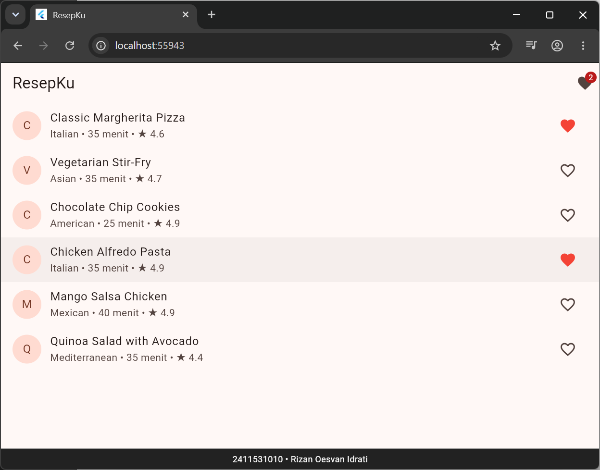
Checkpoint 2: Halaman Home dengan Badge Bernilai 2Setelah ikon hati pada Classic Margherita Pizza dan Chicken Alfredo Pasta ditekan, kedua ikon berubah menjadi merah dan badge pada AppBar menunjukkan angka 2.
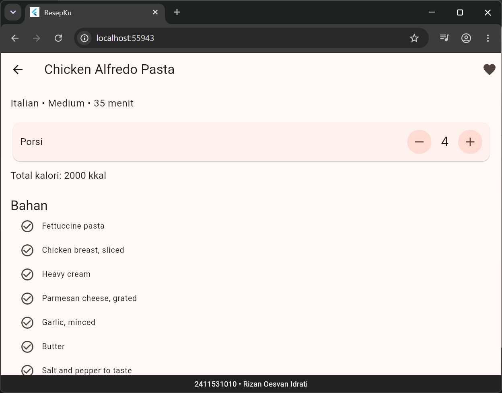
Checkpoint 2: Halaman Detail dengan Ikon Hati TerisiHalaman detail resep yang telah difavoritkan menampilkan ikon hati terisi pada AppBar, membuktikan bahwa halaman detail kini dapat membaca status favorit yang ditetapkan dari halaman Home.
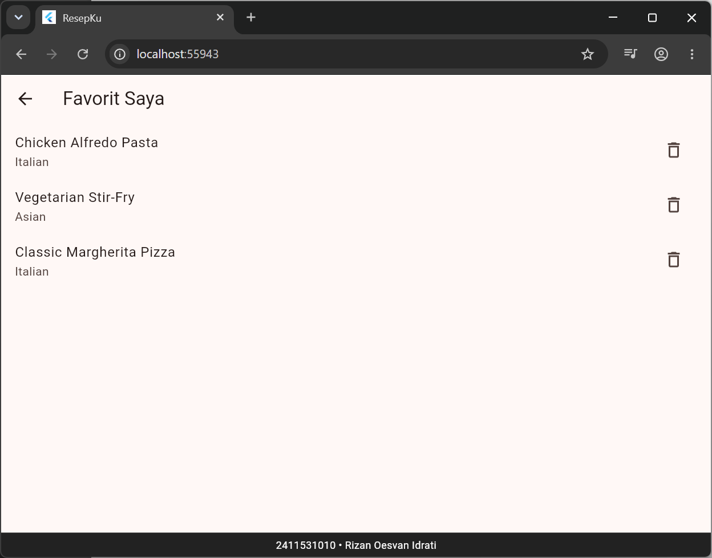
Checkpoint 2: Halaman FavoritHalaman Favorit yang dibuka melalui badge menampilkan daftar resep yang sedang difavoritkan beserta tombol hapus pada setiap item.
3. Pertanyaan Analisis
1. Keterbatasan state lokal pada fitur favorit. Ikon hati dapat berubah karena setState() membangun ulang tile yang menyimpan _isFavorite, tetapi jumlah favorit tidak dapat ditampilkan pada AppBar HomePage dan halaman detail tidak dapat mengetahui status favorit suatu resep. Penyebabnya adalah data _isFavorite tersimpan secara terpisah di dalam _RecipeTileState milik setiap tile, sementara data pada Flutter hanya mengalir dari parent ke child. HomePage sebagai parent tidak dapat membaca state milik child-nya, dan DetailPage hanya menerima objek Recipe yang tidak memuat informasi favorit. Oleh karena itu, data yang dibutuhkan oleh banyak widget dan halaman perlu dipindahkan ke tempat yang lebih tinggi pada widget tree, yaitu ke dalam Provider.
2. Mengapa jumlah porsi tetap menggunakan setState()? Jumlah porsi hanya dibutuhkan oleh halaman detail resep yang sedang dibuka dan tidak dibaca oleh widget atau halaman lain, sehingga termasuk state lokal yang cukup dikelola dengan setState(). Hasil skenario keenam pada pengujian menunjukkan bahwa porsi kembali ke nilai awal setiap kali halaman detail dibuka ulang, karena objek State dibuang ketika halaman ditutup dan initState() kembali mengisi _servings dari data resep. Perilaku ini memang diharapkan, karena pengaturan porsi bersifat sementara untuk satu kali melihat resep. Apabila porsi dimasukkan ke Provider, nilainya akan tetap tersimpan setelah halaman ditutup dan perlu dikelola untuk setiap resep, sehingga menambah kompleksitas tanpa memberikan manfaat.
3. Apa yang terjadi jika ChangeNotifierProvider dipindahkan ke dalam HomePage? Halaman Home dan badge tetap berfungsi, tetapi ketika halaman Favorit dibuka, aplikasi menampilkan error ProviderNotFoundException. Hal ini terjadi karena Provider hanya dapat diakses oleh widget yang berada di bawahnya pada widget tree. Ketika halaman baru dibuka dengan Navigator.push, halaman tersebut ditempatkan sebagai route baru di dalam Navigator milik MaterialApp, sejajar dengan HomePage dan bukan di dalamnya. Akibatnya, FavoritePage dan DetailPage tidak lagi berada di bawah provider tersebut. Dengan memasang provider kembali di atas MaterialApp, seluruh route berada di bawah provider sehingga dapat mengaksesnya kembali.
4. Latihan
Latihan 1: Tema Gelap dan Terang
A. Membuat ThemeProvider
import 'package:flutter/material.dart';
class ThemeProvider extends ChangeNotifier {
ThemeMode _themeMode = ThemeMode.light;
ThemeMode get themeMode => _themeMode;
bool get isDarkMode => _themeMode == ThemeMode.dark;
void setDarkMode(bool isDark) {
_themeMode = isDark ? ThemeMode.dark : ThemeMode.light;
notifyListeners();
}
}ThemeProvider meng-extend ChangeNotifier dan menyimpan mode tema pada field private _themeMode dengan nilai awal ThemeMode.light. Getter themeMode digunakan oleh MaterialApp, sedangkan getter isDarkMode mempermudah halaman Pengaturan menentukan posisi switch. Method setDarkMode mengubah _themeMode sesuai nilai yang diterima, lalu memanggil notifyListeners() agar widget yang mendengarkan ikut diperbarui.
B. Mendaftarkan ThemeProvider dan Mengatur Tema di MaterialApp
import 'package:flutter/material.dart';
import 'package:provider/provider.dart';
import 'package:resepku/pages/home_page.dart';
import 'package:resepku/providers/favorite_provider.dart';
import 'package:resepku/providers/theme_provider.dart';
import 'package:resepku/widgets/identity_footer.dart';
void main() {
runApp(
MultiProvider(
providers: [
ChangeNotifierProvider(create: (context) => FavoriteProvider()),
ChangeNotifierProvider(create: (context) => ThemeProvider()),
],
child: const ResepKuApp(),
),
);
}
class ResepKuApp extends StatelessWidget {
const ResepKuApp({super.key});
@override
Widget build(BuildContext context) {
final themeMode = context.watch<ThemeProvider>().themeMode;
return MaterialApp(
title: 'ResepKu',
debugShowCheckedModeBanner: false,
theme: ThemeData(colorSchemeSeed: Colors.deepOrange),
darkTheme: ThemeData(
colorSchemeSeed: Colors.deepOrange,
brightness: Brightness.dark,
),
themeMode: themeMode,
builder: (context, child) => IdentityFooter(child: child!),
home: const HomePage(),
);
}
}ThemeProvider didaftarkan sebagai ChangeNotifierProvider kedua di dalam MultiProvider, sehingga provider baru dapat ditambahkan tanpa mengubah struktur yang sudah ada. MaterialApp kini memiliki dua tema, yaitu theme untuk mode terang dan darkTheme dengan brightness gelap, sedangkan tema yang aktif ditentukan oleh parameter themeMode. Nilai themeMode dibaca menggunakan context.watch, bukan context.read, karena MaterialApp harus dibangun ulang setiap kali mode tema berubah. Apabila menggunakan read, nilai hanya dibaca satu kali dan perubahan dari switch tidak akan diterapkan. Parameter builder untuk footer identitas tetap digunakan agar footer tampil di setiap halaman.
C. Membuat Halaman Pengaturan
import 'package:flutter/material.dart';
import 'package:provider/provider.dart';
import 'package:resepku/providers/theme_provider.dart';
class SettingsPage extends StatelessWidget {
const SettingsPage({super.key});
@override
Widget build(BuildContext context) {
final isDarkMode = context.watch<ThemeProvider>().isDarkMode;
return Scaffold(
appBar: AppBar(title: const Text('Pengaturan')),
body: ListView(
children: [
SwitchListTile(
secondary: const Icon(Icons.dark_mode),
title: const Text('Mode gelap'),
subtitle: const Text('Ubah tampilan aplikasi menjadi tema gelap'),
value: isDarkMode,
onChanged: (value) => context.read<ThemeProvider>().setDarkMode(value),
),
],
),
);
}
}SettingsPage berisi SwitchListTile berjudul Mode gelap. Posisi switch ditentukan oleh isDarkMode yang dibaca menggunakan context.watch agar switch selalu sesuai dengan tema yang sedang aktif. Ketika switch digeser, callback onChanged memanggil setDarkMode melalui context.read dengan nilai switch yang baru.
D. Menambahkan Tombol Pengaturan di HomePage
import 'package:flutter/material.dart';
import 'package:resepku/data/dummy_recipes.dart';
import 'package:resepku/pages/settings_page.dart';
import 'package:resepku/widgets/favorite_badge_button.dart';
import 'package:resepku/widgets/recipe_tile.dart';
class HomePage extends StatelessWidget {
const HomePage({super.key});
@override
Widget build(BuildContext context) {
return Scaffold(
appBar: AppBar(
title: const Text('ResepKu'),
actions: [
const FavoriteBadgeButton(),
IconButton(
tooltip: 'Pengaturan',
icon: const Icon(Icons.settings),
onPressed: () => Navigator.push(
context,
MaterialPageRoute(builder: (context) => const SettingsPage()),
),
),
],
),
body: ListView(
children: [
for (final recipe in dummyRecipes) RecipeTile(recipe: recipe),
],
),
);
}
}Sebuah IconButton dengan ikon settings ditambahkan pada actions AppBar HomePage di samping FavoriteBadgeButton. Karena IconButton memiliki callback onPressed, list actions tidak lagi bertanda const, sedangkan FavoriteBadgeButton tetap dibuat dengan const. Menekan tombol ini akan membuka SettingsPage menggunakan Navigator.push.
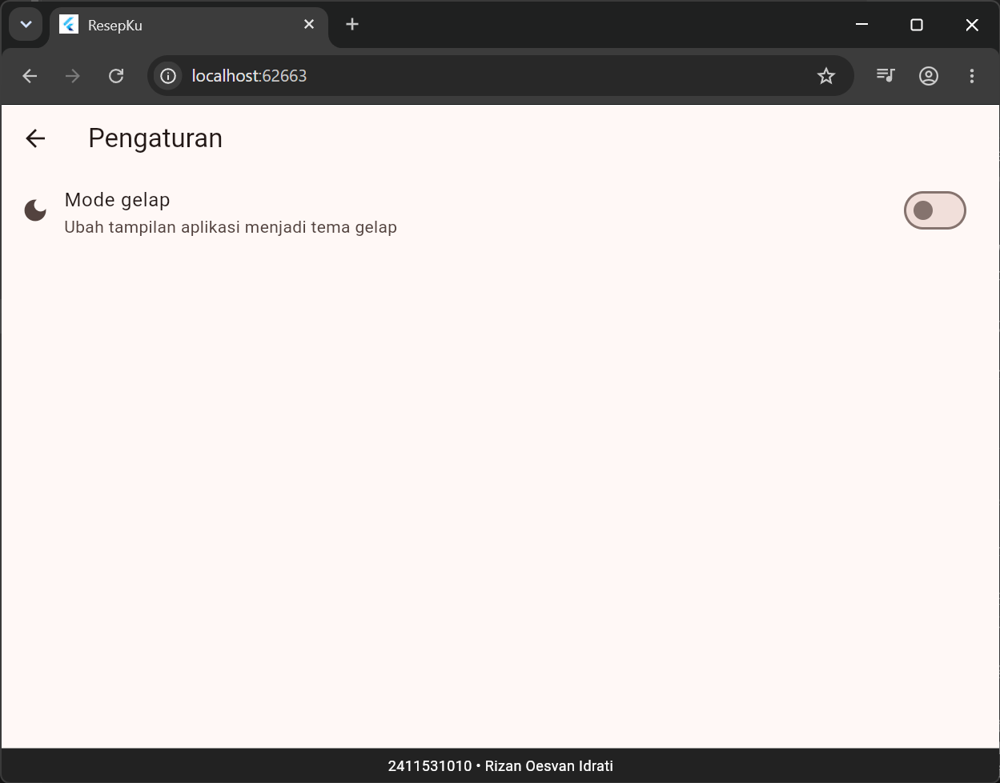
Hasil Tampilan: Halaman Pengaturan dengan Mode TerangHalaman Pengaturan menampilkan SwitchListTile Mode gelap dalam keadaan tidak aktif, dengan tampilan aplikasi masih menggunakan tema terang.
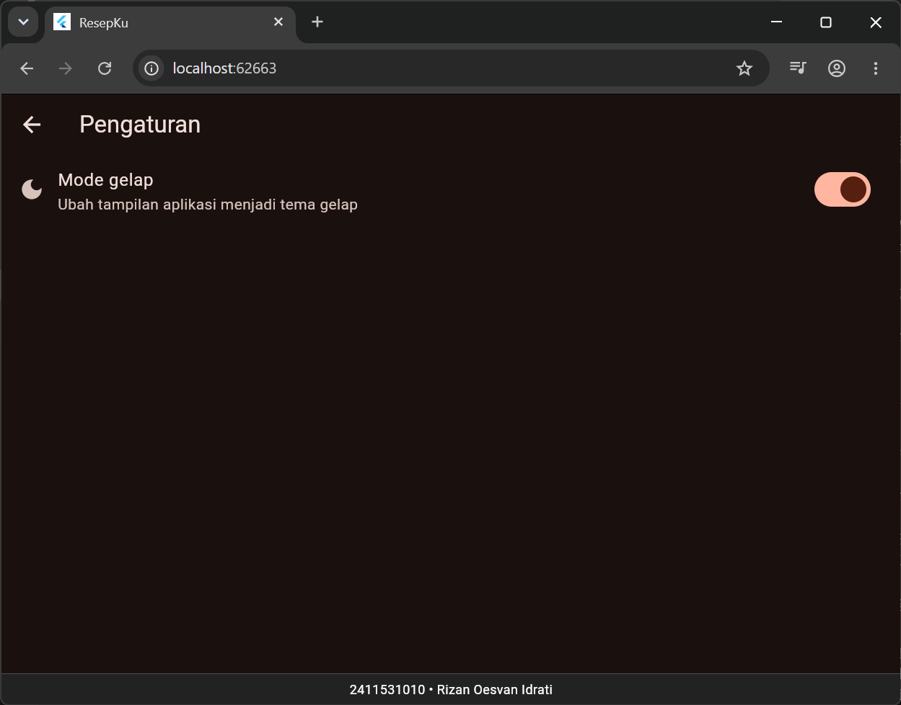
Hasil Tampilan: Halaman Pengaturan Setelah Mode Gelap DiaktifkanSetelah switch diaktifkan, tampilan halaman langsung berubah menjadi tema gelap tanpa perlu memuat ulang aplikasi, karena MaterialApp dibangun ulang setelah ThemeProvider memanggil notifyListeners().
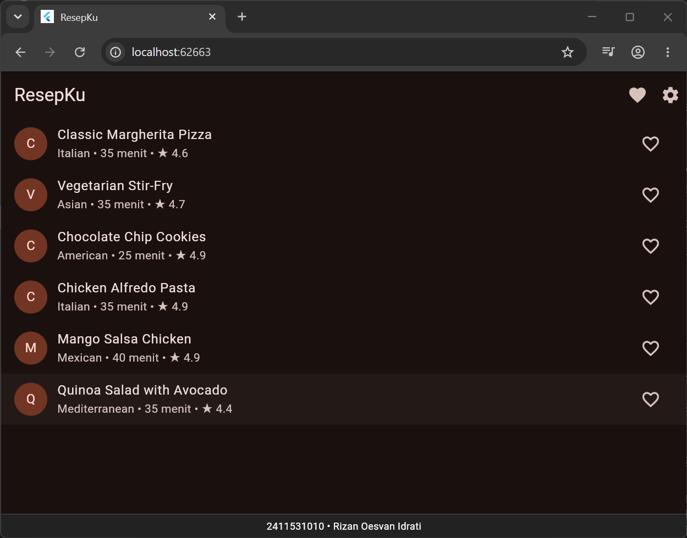
Hasil Tampilan: Halaman Home dalam Mode GelapKetika kembali ke halaman Home, daftar resep dan AppBar juga tampil dalam tema gelap, lengkap dengan tombol pengaturan dan badge favorit pada AppBar.
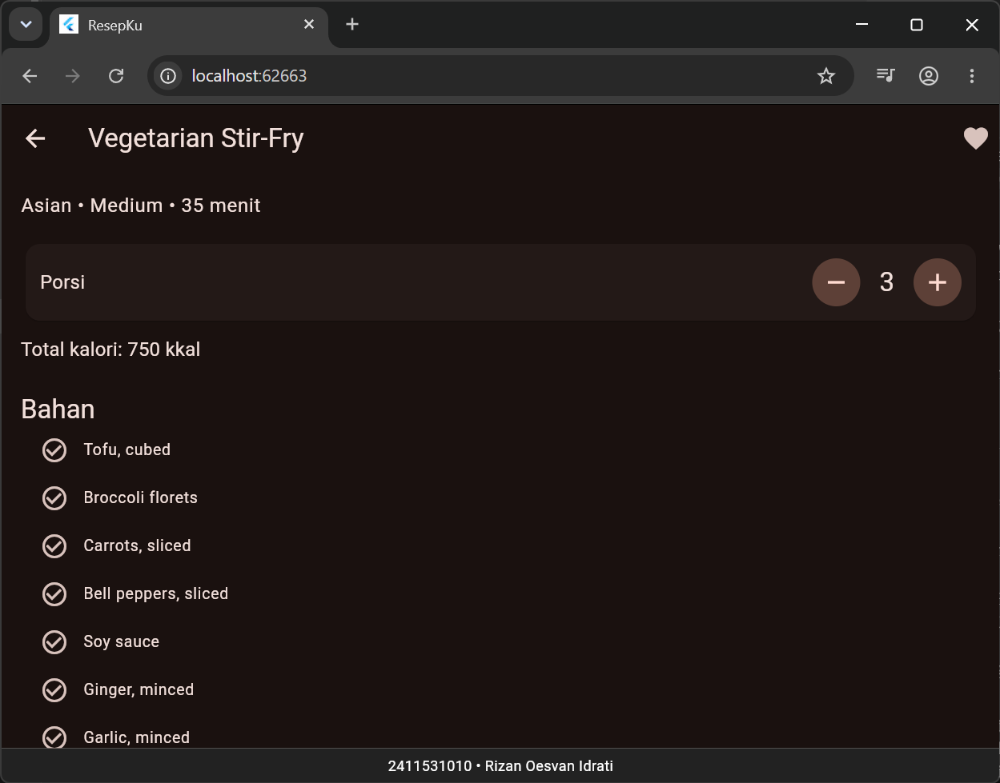
Hasil Tampilan: Halaman Detail dalam Mode GelapHalaman detail resep turut menggunakan tema gelap, yang menunjukkan bahwa perubahan tema berlaku untuk seluruh aplikasi karena diatur langsung pada MaterialApp.
Latihan 2: Menghapus Semua Favorit
A. Tombol Hapus Semua dengan Konfirmasi
import 'package:flutter/material.dart';
import 'package:provider/provider.dart';
import 'package:resepku/providers/favorite_provider.dart';
class FavoritePage extends StatelessWidget {
const FavoritePage({super.key});
Future<void> _confirmClearAll(BuildContext context) async {
final confirmed = await showDialog<bool>(
context: context,
builder: (dialogContext) => AlertDialog(
title: const Text('Hapus semua favorit?'),
content: const Text('Semua resep akan dihapus dari daftar favorit.'),
actions: [
TextButton(
onPressed: () => Navigator.pop(dialogContext, false),
child: const Text('Batal'),
),
TextButton(
onPressed: () => Navigator.pop(dialogContext, true),
child: const Text('Hapus'),
),
],
),
);
if (confirmed == true && context.mounted) {
context.read<FavoriteProvider>().clear();
}
}
@override
Widget build(BuildContext context) {
final count = context.watch<FavoriteProvider>().count;
return Scaffold(
appBar: AppBar(
title: const Text('Favorit Saya'),
actions: [
IconButton(
tooltip: 'Hapus semua',
icon: const Icon(Icons.delete_sweep),
onPressed: count == 0 ? null : () => _confirmClearAll(context),
),
],
),
body: Consumer<FavoriteProvider>(
builder: (context, favorite, child) {
if (favorite.count == 0) {
return const Center(
child: Text(
'Belum ada resep favorit.\nTekan ikon hati di daftar resep.',
textAlign: TextAlign.center,
),
);
}
return ListView(
children: [
for (final recipe in favorite.items)
ListTile(
title: Text(recipe.name),
subtitle: Text(recipe.cuisine),
trailing: IconButton(
icon: const Icon(Icons.delete_outline),
onPressed: () => favorite.toggle(recipe),
),
),
],
);
},
),
);
}
}Pada AppBar FavoritePage ditambahkan IconButton Hapus semua dengan ikon delete_sweep. Jumlah favorit dibaca menggunakan context.watch, sehingga ketika count bernilai nol, onPressed diisi null dan tombol otomatis nonaktif. Apabila daftar favorit berisi data, tombol memanggil method _confirmClearAll yang menampilkan AlertDialog berisi tombol Batal dan Hapus. Dialog dikembalikan dengan nilai false atau true melalui Navigator.pop menggunakan dialogContext, kemudian clear() dari FavoriteProvider hanya dipanggil apabila pengguna memilih Hapus. Pemeriksaan context.mounted memastikan halaman masih aktif sebelum provider diakses setelah proses await selesai.
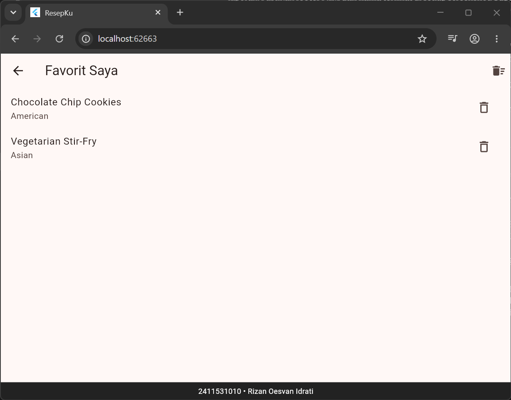
Hasil Tampilan: Halaman Favorit dengan Tombol Hapus SemuaHalaman Favorit yang berisi beberapa resep menampilkan tombol Hapus semua pada AppBar dalam keadaan aktif.
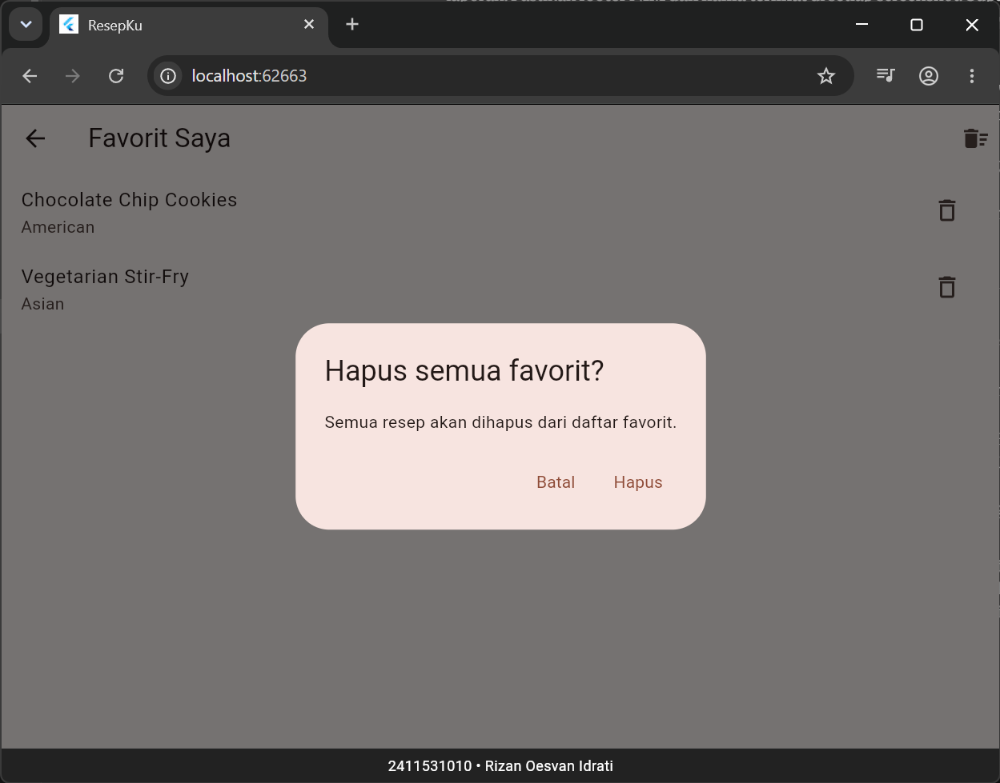
Hasil Tampilan: Dialog Konfirmasi Hapus Semua FavoritKetika tombol Hapus semua ditekan, dialog konfirmasi muncul terlebih dahulu sehingga daftar favorit tidak langsung terhapus. Menekan Batal akan menutup dialog tanpa mengubah daftar favorit.
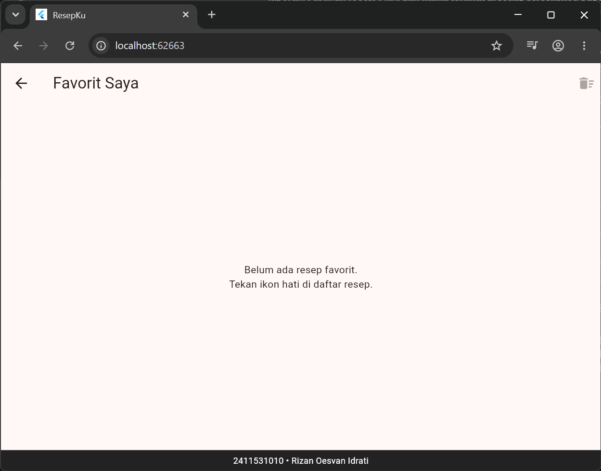
Hasil Tampilan: Halaman Favorit Setelah Semua Favorit DihapusSetelah Hapus dipilih, seluruh resep favorit terhapus dan halaman menampilkan pesan bahwa belum ada resep favorit. Tombol Hapus semua berubah menjadi nonaktif karena daftar favorit telah kosong, dan badge pada halaman Home ikut menghilang.
5. Kesimpulan
Berdasarkan praktikum yang telah dilakukan, dapat disimpulkan bahwa tempat penyimpanan state perlu disesuaikan dengan seberapa luas data tersebut digunakan. Data yang hanya dibutuhkan oleh satu widget, seperti jumlah porsi pada halaman detail, cukup dikelola sebagai state lokal dengan StatefulWidget dan setState(), dan nilainya wajar hilang ketika halaman ditutup. Sebaliknya, data yang dibutuhkan oleh banyak widget dan halaman, seperti daftar favorit dan mode tema, perlu disimpan sebagai state global menggunakan Provider yang dipasang di atas MaterialApp. Percobaan menyimpan favorit di dalam setiap tile membuktikan bahwa state lokal tidak dapat dibaca oleh widget lain, sedangkan penerapan FavoriteProvider dan ThemeProvider menunjukkan bahwa satu perubahan dapat langsung tercermin di seluruh aplikasi melalui notifyListeners(). Penggunaan context.watch di dalam build(), context.read di dalam callback, dan Consumer untuk membangun ulang bagian tertentu membuat pembaruan tampilan menjadi tepat sasaran.